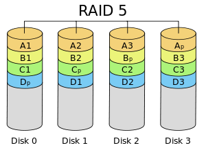

Chris Romeo Munoz wrote this on Feb 23 2015 / 34 Comments
A few of us recently attended Nodeschool Conference, in San Francisco, CA. During the infrastructure panel, other web development agencies asked about the hardware that powers Shumaker Technology Group.
A lot of the web development agencies that were in attendance for this event were from California and Seattle, we were the only web agency from the mitten.
Web Servers
For the numerous amount of clients that we have around the Lansing area we have an Apache HTTP Server and also utilize Microsoft Internet Information Services, known as IIS. We have an Apache server because we can adapt the server for our specific needs, and there is a large public library of Apache add-ons.
Application Servers
Due to the fact that we utilize Ruby on Rails and PHP applications we run those applications on Dell T320 server, which it is preinstalled with Windows Server 2012. The Dell T320 Server delivers reliable performance for your core business applications with the robust flexibility of the Power Edge T320 Intel.
We utilize Intel Xeon processor E5-2400 and E5-2400 v2 product families and Intel Xeon processor E5-1410. The performance and reliability we get from these processors, is a must buy.
Database Server
For our database functions, the database server is running SQL 2014 Enterprise. We use this Microsoft product because of its comprehensive high-end datacenter capabilities for demanding database and business intelligence requirement. Our organization, Shumaker Technology Group, demands a platform that allows us to manage our data with high enhanced security that is running SQL 2014 Enterprise is the best tool for us.
Storage
We run our storage on RAID 5. It allows speed, large, and a redundant storage. With a RAID 5, we have the ability to have 3 or more drives and strip our data for speed. In this technological generation, we need speed.
